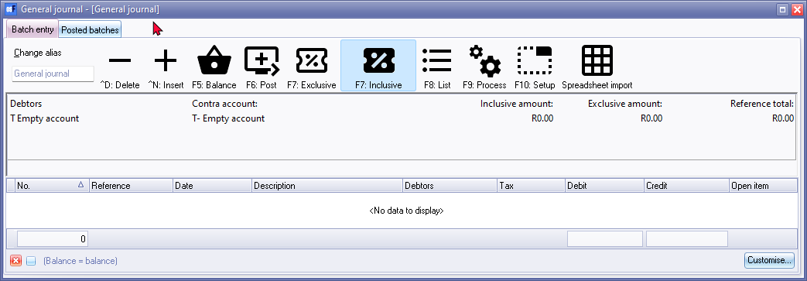
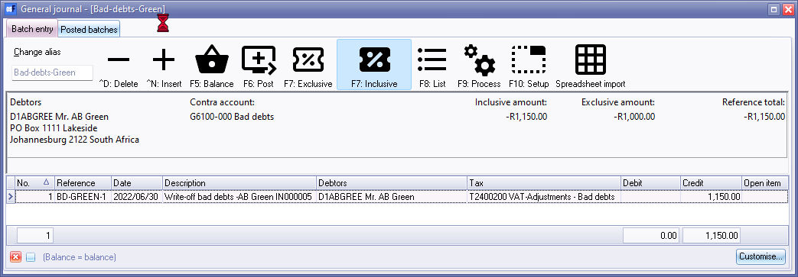
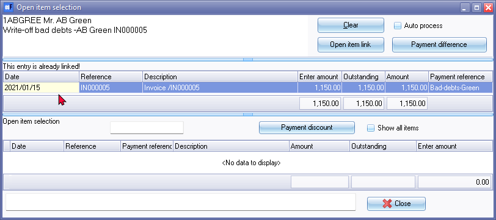

Recovery of bad debts written-off
Recovery of bad debts written-off
There may be instances where previously written-off bad debts or irrecoverable debts are actually recovered. However, it's important to note that typically only a portion of the original amount of bad debts is recovered.
The recovery of bad debts written off refers to the process of collecting payments or receiving funds for debts that were previously deemed uncollectible and written off as losses by a business. When a business determines that a debt is unlikely to be recovered, it may choose to write off the debt as a bad debt expense, reducing the Accounts receivable (Debtor's control account) balance.
However, there are cases where the debtor later makes a payment or settles the debt, resulting in the recovery of the previously written-off amount. This recovery of bad debts written off represents the collection of funds that were once considered irrecoverable.
The recovery of bad debts written off is recorded as a separate transaction in the accounting records. It typically involves reversing the write-off entry and recognizing the recovered amount as income or reducing the provision for bad debts, depending on the accounting treatment chosen by the business.
This recovery process allows the business to improve its financial position by collecting previously uncollectible debts and potentially reducing the impact of bad debts on its financial statements.
Options to record the recovery of bad debts already written-off
To record the recovery of bad debts that have already been written off, you have several options:
- Allocate the amount directly to the debtor's account: You can allocate the recovery amount directly to the debtor's account, which creates a credit balance in the account. This method reflects the specific debtor's account that has experienced the recovery and provides a clear record of the transaction.
- Transfer the amount from the debtor's account to the Bad debts recovered account: After allocating the recovery amount to the debtor's account, you can then transfer the same amount from the debtor's account to a separate account called "Bad Debts Recovered." This transfer effectively clears the credit balance in the debtor's account and records the recovery as a current asset.
- Use a specific income account: Alternatively, you can allocate the recovery amount directly to a designated income account such as "Bad debts recovered." This method treats the recovery as income, reflecting the increase in the financial resources of the business due to the recovery of previously written-off debts.
The choice of method depends on your specific accounting requirements and preferences. It's important to ensure that the chosen method accurately reflects the recovery of bad debts and provides a clear audit trail of the transactions.
Options to record the recovery of bad debts already written-off
To record the recovery of bad debts that have already been written off, you have several options:
- Allocate the amount directly to the Bad debts recovered account: You can allocate the recovery amount directly to the "Bad Debts Recovered" account since the debtor's account, should have a zero balance when the bad debts was written-off at the stage when the recovery of bad debts is collected. The "Bad Debts Recovered" account may be a current asset account or an income account, in your chart of accounts according to the accounting policies and principles that apply to your jurisdiction.
- Transfer the amount from the Bad debts recovered account to the debtor's account: After allocating the recovery amount to a separate account called "Bad Debts Recovered" you can then transfer the same amount to the debtor's account. This will create a credit balance in the debtor's account. This method reflects the specific debtor's account that has experienced the recovery and provides a clear record of the transaction. This transfer effectively clears the credit balance in the "Bad Debts Recovered" account debtor's account and records the recovery as a current asset.
After allocating the recovery amount to the debtor's account, you can then transfer the same amount from the debtor's account to a separate account called "Bad Debts Recovered." This transfer effectively clears the credit balance in the debtor's account and records the recovery as a current asset.
- Use a specific income account: Alternatively, you can allocate the recovery amount directly to a designated income account such as "Bad debts recovered." This method treats the recovery as income, reflecting the increase in the financial resources of the business due to the recovery of previously written-off debts.
The choice of method depends on your specific accounting requirements and preferences. It's important to ensure that the chosen method accurately reflects the recovery of bad debts and provides a clear audit trail of the transactions.
Recovery of Bad debts to Debtor account
When recording the recovery of bad debts that have already been written off, the steps are generally applicable in most cases. However, the need for transferring the amount from the "Bad Debts Recovered" account back to the debtor's account depends on the specific circumstances and accounting practices of the business. Let's explore each option in more detail:
- Allocate the amount directly to the "Bad Debts Recovered" account: In this approach, you directly allocate the recovery amount to the "Bad Debts Recovered" account. This method is straightforward and treats the recovery as income. The "Bad Debts Recovered" account could be a current asset account if the business intends to use the funds for future operations, or it could be an income account if it represents recovered revenue. This option is generally suitable for cases where the debtor's account has been fully written off, and there is no need to update the debtor's account balance.
- Transfer the amount from the "Bad Debts Recovered" account to the debtor's account: This option is appropriate when you want to reflect the recovery on the specific debtor's account. It involves allocating the recovery amount to the "Bad Debts Recovered" account initially and then transferring the same amount back to the debtor's account. This transfer creates a credit balance in the debtor's account, indicating that the debtor has paid off the recovered amount. The "Bad Debts Recovered" account will have a zero balance after the transfer.
Whether this step is necessary if the debtor has passed away, or the debtor is insolvent or liquidated, it depends on the accounting treatment followed by the business and the specific circumstances of the recovery. If the debtor is no longer alive or is insolvent or liquidated, and there is no likelihood of further transactions with the debtor, some businesses may choose to skip the transfer step and directly allocate the recovery amount to the "Bad Debts Recovered" account as income. In such cases, the recovery may be treated as a general income item and not associated with the individual debtor's account.
It is essential to consider the relevant accounting standards and regulations in your jurisdiction and consult with a qualified accountant or financial advisor to determine the best approach for recording the recovery of bad debts in your specific situation. Proper documentation and adherence to accounting principles are crucial to maintain accurate financial records and comply with relevant accounting and tax rules.
Sources of the recovery of bad debts written-off
Recovery of bad debts that have been previously written off can occur through various means, including:
- Debt collector: The business may engage the services of a debt collection agency to recover the outstanding debt from the debtor. The debt collector will attempt to collect the debt on behalf of the business, and if successful, the recovered amount will be recorded in the Receipts journal.
- Garnishee order: In some cases, the business may obtain a garnishee order from a court to collect the debt directly from the debtor's employer. The employer deducts the specified amount from the debtor's salary and pays it to the business, which is then recorded in the Receipts journal.
- Insolvency or Liquidation: If the debtor becomes insolvent or is liquidated, the business may be able to recover a portion of the outstanding debt from the debtor's estate as part of the liquidation process. This recovery would also be recorded in the Receipts journal.
In all these cases, when the bad debts are recovered, the transaction should be allocated to the "Bad debts recovered" account to properly account for the amount received. Depending on the specific circumstances and any applicable taxes or adjustments, the business may need to take further accounting steps, such as recording a tax adjustment or debiting the "Bad debts recovered" account and crediting the debtor account.
It's important for businesses to keep accurate records of all debt recovery transactions, as well as the methods used to recover the bad debts. Properly accounting for bad debt recoveries ensures that the financial statements accurately reflect the business's financial position and performance. As always, it's advisable to follow relevant accounting standards and consult with accounting or financial professionals if there are any uncertainties or complexities in the debt recovery process.
Estate distribution when a debtor passed away
In the case where a debtor has passed away, and their estate is distributing the debts, the process would typically involve the following steps:
- Notification: The business should be notified of the debtor's passing and the appointment of an executor or administrator to handle the estate's affairs.
- Verification: The executor or administrator of the estate will verify the outstanding debts owed by the deceased debtor to the business. This may involve reviewing records, invoices, and any existing agreements or contracts.
- Agreement: Once the debts are verified, the executor or administrator may contact the business to agree on the settlement of the outstanding debts. This agreement will depend on the financial situation of the estate and the available assets to cover the debts.
- Debt distribution: After reaching an agreement with the business, the executor or administrator will distribute the appropriate payments to the business for the outstanding debts. These payments will be recorded as receipts in the Receipts journal.
- Recording transactions: The business should record the debt recovery transactions in its accounting records. The recovered amounts should be allocated to the "Bad debts recovered" account or the appropriate revenue or income account, depending on the nature of the debts.
- Tax implications: Depending on the tax regulations in the relevant jurisdiction, there may be tax implications for both the estate and the business related to the debt recoveries. It's essential to follow the tax rules and properly account for any tax adjustments in the financial records.
- Estate distribution: The executor or administrator will continue to distribute the remaining assets of the estate to the beneficiaries, following the deceased's will or the rules of intestacy if there is no will.
As with any financial transaction involving estates and legal matters, it is crucial for the business to work closely with the executor or administrator of the deceased debtor's estate and seek professional advice if needed. Proper documentation and record-keeping are vital during this process to ensure accurate accounting and compliance with legal and tax requirements.
Batch or Journal to process transactions for the recovery of bad debts written-off
The recovery of bad debts written off is typically recorded in the receipts journal when the money is received or deposited into the bank account. The receipts journal is used to record all incoming funds and their allocation to various accounts.
When a recovery of bad debts occurs, the business receives payment from the debtor or on behalf the debtor, and this payment is recorded in the receipts journal. The entry in the receipts journal will include the amount received, the debtor's account being credited (reducing the outstanding balance), and the account to which the recovered amount is allocated, such as the "Bad debts recovered" account or the debtor's account itself.
By recording the recovery in the receipts journal, it ensures that the transaction is properly documented and reflects the inflow of funds into the business. It also allows for accurate tracking of the recovered amounts and facilitates reconciliation with bank statements or other financial records.
Procedure for the recording of transactions for the recovery of bad debts
The procedure for entering receipt transactions for the recovery of bad debts:
- Access the "Batch entry" screen by clicking on the Batch entry icon (or the Cash / Bank entry icon if you use the Bank import plugin) on the Default ribbon.
- Select the "Receipts journal", ensuring you choose the correct journal if multiple bank accounts are involved.
- Enter the recovery details, including the deposit number, transaction date, transaction details, and select the debtor account. If VAT/GST/Sales Tax was applicable when the original debt was written off, select the bad debt tax code. Enter the amount in the credit column.
- Enter the amount received and deposited, including VAT/GST/Sales Tax, using the same reference numbers, and select the debtor account and the "VAT/GST/Sales Tax - Bad debts" tax code. Enter the amount in the credit column.
- Enter the amount of bad debts recovered, excluding VAT/GST/Sales Tax, using the same reference numbers. Select the Other income account (Bad debts recovered), select the "Empty" option as the "No Tax" code, and enter the amount in the credit column.
- To create the debit transaction to the debtor's account, use the same reference numbers, select the debtor account, select the "Empty" option as the "No Tax" code, and enter the amount (excluding VAT/GST/Sales Tax). Since the Receipts Journal only allows a credit amount entry, enter a negative sign before typing the amount in the credit column. osFinancials will automatically transfer the amount to the debit column upon pressing Enter.
Once the transactions for the recovery of bad debts are entered in the receipts journal, they will be displayed accordingly. Use the F5:Balance icon or press F5 to list the batch, and osFinancials will generate balancing entries to the bank account and the Output VAT/GST/Sales Tax account, if applicable. It is advisable to overtype the default descriptions of these balancing entries for better traceability and reconciliation.
Finally, change the alias (batch name) using the F9:Process icon or pressing F9, list the batch using the F8:List icon or pressing F8, and post (update) the batch to the ledger using the F6:Post icon or pressing F6.
After posting the transactions, the T-Account viewer should reflect the appropriate changes in the Debtors ledger and General ledger. The debits and credits will be recorded for record purposes, and the VAT/GST/Sales Tax on bad debts should be submitted on the relevant tax return and paid to the tax authority.
To summarize the accounting equation for the recovery of bad debts written off:
Debits: Bank account
Credits: Bad Debts Recovered (Other Income account) + Output VAT/GST/Sales Tax
Debits: Current Assets Credits: Other Income + Current Liabilities (VAT/GST/Sales Tax)"
Please note that this is a general guide, and it's always recommended to consult with a professional accountant or financial advisor for specific accounting practices and procedures.
===
Example : Recovery of Bad debts already written off
Example: An amount of 1150 (including VAT at 15%) is written off.
To record the write-off of an amount of $1,150, including VAT at 15%, the example entry would depend on the specific accounts and tax codes used in your accounting system. However, here's a general example of the entry:
|
Example entry: |
Account classification |
Debit |
Credit |
|
Debit: Bad debts expense (excluding VAT) |
Expenses |
$1,000 |
|
|
Debit: Bad debts Tax code (VAT) |
Current liabilities |
$150 |
|
|
Credit: Debtor account |
Current assets |
|
$1,150 |
Example : Recovery of Bad debts with VAT/GST/Sales tax
To write off bad debts and clear the Debtors account with the amount of irrecoverable debts (including VAT/GST/Sales Tax), follow these steps:
- Identify the irrecoverable Debtor account and ensure you have sufficient documentary evidence of attempts to collect the debt. Only proceed with write-off after exhausting all avenues.
- If you are a registered VAT/GST/Sales Tax vendor, identify the Interest amount and the VAT/GST/Sales Tax amount of the Output Tax already paid to the Tax Authorities in a previous Tax period. This is important to verify the correct VAT/GST/Sales Tax amount.
|
|
When writing off bad debts for debtor accounts on which output tax was paid to the tax authorities in a previous tax period, you may need to consider the VAT/GST or sales tax implications. However, the specific steps and requirements may vary depending on the jurisdiction and tax regulations. Here are some general considerations:
It's important to consult with a tax professional or refer to the tax regulations specific to your jurisdiction to ensure compliance with the VAT/GST or sales tax requirements when writing off bad debts and handling the associated tax implications. |

|
|
Interest amount - Identifying the interest amount, it typically refers to determining the portion of the outstanding debt that represents interest charges. When dealing with bad debts or debt write-offs, it's important to consider any interest charges that may have been applied to the outstanding debt. In some cases, businesses may charge interest on overdue payments, and this interest may be subject to VAT/GST or sales tax depending on the applicable regulations in your jurisdiction. By identifying the interest amount, you can ensure that the correct VAT/GST/sales tax amount is calculated and accounted for when writing off the bad debts. This helps in accurately determining the tax implications and complying with the tax regulations specific to your VAT/GST/sales tax system. It's important to consult with a tax professional or refer to the tax regulations in your jurisdiction to understand the specific requirements and treatment of interest charges in relation to VAT/GST/sales tax. |
- Write off the Bad Debts in the General journal.
Example: An amount of 1,150 (including VAT at 15%) is written off.
Procedure to process the recovery bad debts written off for a debtor account:
- In osFinancials navigate to the Default ribbon.
- Select "Batch entry" and choose the "Receipts journal" for the bank account into which the monies were received.

- Batch setup: Since this is a general journal that may be used for other general transactions, click F10: Setup to set the "Options for this bath" as follows:
- Standard tab - "Contra account" select the "Bad debts" expense account.

- Advanced tab - Select the following options:

- Account lookup type - Select "Debtors" to only list the debtor accounts in the lookup.
- Contra account lookup type - Select "General ledger" to only list the general ledger account as the contra account for the balancing entries or transactions.
- Leave the rest of the settings as in the options for this batch as in the screenshots, and click OK to save your settings.
- Change alias: By default the name of the journal is displayed as "General journal - [General journal]" To make it easy to identify the specific nature of the transactions in the General journal, enter a unique name for your specific requirements, in the "Change alias field" and press Enter. In this example the "Bad debts-Green" was entered. This will change the general journals name as name of the journal is displayed as "General journal - [Bad debts-Green]" in the titlebar It indicates that "Bad debts for Debtor Green" was processed in the general journal.
- Enter the transactions for the bad-debts:
- Date: By default, the date of your operating system would be displayed. Select the specific date on which you need to write off the debt.
- Reference: The default reference in a new General journal would be "1" . In the case of a previous processed transactions, the Description could be the related to the last reference used. Enter a valid reference.
- Description: Enter a description for each transaction for your own requirements. In this example, the description is changed to "Write-off bad debts -AB Green IN000005" Note: The descriptions should make sense to understand the nature of the transactions.
- Debtors (Accounts): Select the account of the debtor for which you need to write-off bad debts.
- Tax: Select the VAT/GST.Sales tax code for bad debts if applicable to your jurisdiction.
|
|
VAT/GST/Sales tax - Writing off of bad debts: It is important to note that the specific tax rules and regulations regarding bad debt write-offs can vary, and it's advisable to consult with a tax professional or refer to the tax laws in your jurisdiction to determine the exact requirements and treatment of VAT/GST/Sales tax in relation to writing off uneconomical bad debts. If VAT/GST/Sales tax is applicable on the writing off of bad debts, you can follow the steps below to ensure proper recording and allocation of the tax:
By following these steps, you can ensure that the VAT/GST/Sales tax implications of writing off bad debts are properly accounted for and reflected in your financial records and tax returns. |
- Credit: Enter the amount in the credit column. If the VAT/GST/Sales tax code for bad debts was selected, it will automatically generate the VAT/GST/Sales tax percentage when balancing entries are generated.
- After entering the write off transaction in the General journal should be displayed as follows:

|
|
Open item selection: The "Open item selection" screen will be launched for debtors whose accounts are set as Open item accounts. You can match the bad debts to be written off against specific transactions or invoices.  After selecting or linking the Bad-debts write-off transaction to an outstanding transactions, the transaction line will be displayed in a Yellow color. |

In this example, the bad debts expense account is debited with the amount of $1,000, representing the irrecoverable debt excluding VAT. The bad debts tax code account is debited with the VAT amount of $150. The debtor account is credited with the total amount of $1,150 to clear the outstanding debt.
|
|
Please note that the specific accounts and tax codes may vary based on your accounting system and local tax regulations. It's important to consult with a tax professional or refer to the guidelines provided by your tax authority to ensure accurate and compliant recording of write-offs including VAT/GST/sales tax. |
Here's the revised entry:
|
Example entry: |
Account classification |
Debit |
Credit |
|
Debit: Debtor account |
Current assets |
$1,150 |
|
|
Credit: Bad debts recovered |
Current assets |
|
$1.000 |
|
Credit: Bad debts - Tax code (VAT/GST/Sales tax) |
Current liabilities |
|
$150 |
Using the "Bad Debts Recovered" account helps maintain proper accounting records and provides better visibility of the recovered amount specifically related to bad debts.
===
If an amount of 1150, including VAT at 15%, is written off in a previous year and the full amount is subsequently recovered, the example entry would depend on the specific accounts and tax codes used in your accounting system. However, here's a general example of the entry:
- Reversal of Write-off Entry: Debit: Debtor Account - 1000 Debit: VAT/GST/Sales Tax Control Account - 150 Credit: Bad Debts Expense (excluding VAT) - 1000 Credit: Bad Debts Tax Code (VAT) - 150
In this entry, the debtor account is debited with the full amount of 1150 to reverse the previous write-off. The VAT/GST/Sales Tax control account is also debited with the VAT amount of 150. The bad debts expense account (excluding VAT) is credited with 1000, and the bad debts tax code account (VAT) is credited with 150 to reverse the initial write-off entries.
- Recovery of Debt Entry: Debit: Debtor Account - 1150 Credit: Revenue/Sales Account - 1000 Credit: VAT/GST/Sales Tax Control Account - 150
In this entry, the debtor account is debited with the recovered amount of 1150. The revenue/sales account is credited with the original amount excluding VAT (1000), and the VAT/GST/Sales Tax control account is credited with the VAT amount of 150.
Please note that these entries are general examples, and you should consult with a professional accountant or refer to the guidelines provided by your accounting software to ensure accurate recording of the recovery of a previously written-off amount, including VAT/GST/sales tax.
===
"Cashbook Line:125 Desc:Payment AB Green Recover bad debts Cannot use 2400-200 on a debtors creditors bank or other tax account!"
===
In osFinancials, when recovery of bad debts already written off transaction is recorded in the receipts journal and tax is applicable you cannot select a debtor account with a tax. This will render an error message = "Cashbook Line:125 Desc:Payment AB Green Recover bad debts Cannot use 2400-200 on a debtors creditors bank or other tax account!"
In osFinancials, the error message "Cashbook Line:125 Desc:Payment AB Green Recover bad debts Cannot use 2400-200 on a debtors creditors bank or other tax account!" indicates that there is an issue with selecting a tax account for a debtor account when recording a recovery of bad debts transaction in the receipts journal.
This error message occurs because tax accounts, such as 2400-200 in this case, are generally not allowed to be used on debtor or creditor accounts. Tax accounts are typically reserved for specific tax-related transactions and should not be linked to debtor or creditor accounts directly.
To resolve this issue and record the recovery of bad debts transaction correctly, you need to ensure that you are selecting the appropriate accounts for the transaction. Here's what you can do:
- Identify the correct accounts: When recording a recovery of bad debts, you should select the relevant debtor account (AB Green in this case) for the receipt entry. The receipt entry should represent the amount received from the debtor to recover the previously written-off bad debt.
- Use a regular income or bank account: For the transaction's account selection, use a regular income account or bank account (depending on how the money is received) instead of a tax account. The receipt of the recovered amount should be posted to an appropriate income or bank account to reflect the recovery.
- Adjust the tax appropriately: If tax is applicable to the recovered amount, you should handle the tax calculation separately. Depending on your tax setup and regulations, you may need to calculate and account for the tax amount separately from the receipt entry.
By following these steps and selecting the correct accounts for the recovery of bad debts transaction, you should be able to avoid the error message and accurately record the transaction in osFinancials. If you are unsure about how to handle tax-related transactions or if you encounter any difficulties, it's recommended to consult with your accounting or tax professional for specific guidance based on your company's setup and applicable tax regulations.
===
When recovery of bad debts is recorded in the Receipts journal, the transaction including the transaction should be allocated to the "Bad debts recovered account" Then I think need to decide whether to do further business with the debtor, unblock the account (is account is blocked /disabled) then have the option to record a transaction to debit "Bad debts recovered account" and credit the bad debts tax account and credit the debtor account?
Yes, you are correct. When recording the recovery of bad debts in the Receipts journal, the transaction should be allocated to the "Bad debts recovered account" to properly account for the amount received for the previously written-off bad debt.
After recording the recovery of bad debts and allocating it to the "Bad debts recovered" account, you have several options to handle the further business with the debtor:
- Unblock the debtor account: If the debtor's account was previously blocked or disabled due to the bad debt, you can unblock the account after the recovery. This will allow you to continue doing business with the debtor.
- Record a separate transaction: If you decide to do further business with the debtor and want to settle the recovered bad debt, you can record a separate transaction to debit the "Bad debts recovered" account and credit the debtor account. This will offset the recovery amount against the bad debt, showing that the bad debt has been fully settled.
- Record a tax adjustment: If tax was applicable to the recovered bad debt, you can also record a tax adjustment separately. Depending on your tax regulations and setup, you may need to credit the bad debts tax account and debit the appropriate tax liability account to account for the tax amount.
By taking these steps, you can ensure that the recovery of bad debts is properly accounted for and that your debtor accounts reflect the accurate financial position after the recovery. As always, it's essential to follow proper accounting practices and comply with relevant tax regulations when handling bad debts and their recovery. If you have any specific questions or uncertainties regarding the accounting treatment, it's advisable to consult with your accounting or financial advisor for guidance tailored to your business's individual circumstances.
===
In osFinancials, when recovery of bad debts already written-off transaction is recorded in the receipts journal and tax is applicable you cannot select a debtor account with a tax. This will render an error message = "Cashbook Line:125 Desc:Payment AB Green Recover bad debts Cannot use 2400-200 on a debtors creditors bank or other tax account!"
In osFinancials, the error message
"Cashbook Line:125 Desc:Payment AB Green Recover bad debts Cannot use 2400-200 on a debtors creditors bank or other tax account!"
indicates that there is an issue with selecting a tax account for a debtor account when recording a recovery of bad debts transaction in the receipts journal.
This error message occurs because tax accounts, such as 2400-200 in this case, are generally not allowed to be used on debtor or creditor accounts. Tax accounts are typically reserved for specific tax-related transactions and should not be linked to debtor or creditor accounts directly.
To resolve this issue and record the recovery of bad debts transaction correctly, you need to ensure that you are selecting the appropriate accounts for the transaction. Here's what you can do:
- Identify the correct accounts: When recording a recovery of bad debts, you should select the relevant debtor account (AB Green in this case) for the receipt entry. The receipt entry should represent the amount received from the debtor to recover the previously written-off bad debt.
- Use a regular income or bank account: For the transaction's account selection, use a regular income account or bank account (depending on how the money is received) instead of a tax account. The receipt of the recovered amount should be posted to an appropriate income or bank account to reflect the recovery.
- Adjust the tax appropriately: If tax is applicable to the recovered amount, you should handle the tax calculation separately. Depending on your tax setup and regulations, you may need to calculate and account for the tax amount separately from the receipt entry.
By following these steps and selecting the correct accounts for the recovery of bad debts transaction, you should be able to avoid the error message and accurately record the transaction in osFinancials. If you are unsure about how to handle tax-related transactions or if you encounter any difficulties, it's recommended to consult with your accounting or tax professional for specific guidance based on your company's setup and applicable tax regulations.
===
When recovery of bad debts is recorded in the Receipts journal, the transaction including the transaction should be allocated to the "Bad debts recovered account" Then I think need to decide whether to do further business with the debtor, unblock the account (is account is blocked /disabled) then have the option to record a transaction to debit "Bad debts recovered account" and credit the bad debts tax account and credit the debtor account?
Yes, you are correct. When recording the recovery of bad debts in the Receipts journal, the transaction should be allocated to the"Bad debts recovered" account to properly account for the amount received for the previously written-off bad debt.
After recording the recovery of bad debts and allocating it to the "Bad debts recovered" account you have several options to handle the further business with the debtor:
- Unblock the debtor account: If the debtor's account was previously blocked or disabled due to the bad debt, you can unblock the account after the recovery. This will allow you to continue doing business with the debtor.
- Record a separate transaction: If you decide to do further business with the debtor and want to settle the recovered bad debt, you can record a separate transaction to debit the "Bad debts recovered account" and credit the debtor account. This will offset the recovery amount against the bad debt, showing that the bad debt has been fully settled.
- Record a tax adjustment: If tax was applicable to the recovered bad debt, you can also record a tax adjustment separately. Depending on your tax regulations and setup, you may need to credit the bad debts tax account and debit the appropriate tax liability account to account for the tax amount.
By taking these steps, you can ensure that the recovery of bad debts is properly accounted for and that your debtor accounts reflect the accurate financial position after the recovery. As always, it's essential to follow proper accounting practices and comply with relevant tax regulations when handling bad debts and their recovery. If you have any specific questions or uncertainties regarding the accounting treatment, it's advisable to consult with your accounting or financial advisor for guidance tailored to your business's individual circumstances.